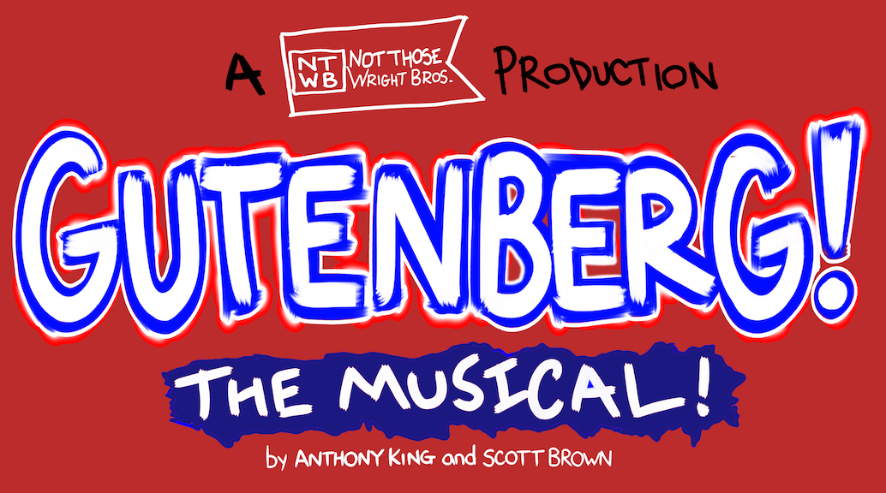

Click here to watch our appearance and performance on KGUN 9's The Morning Blend
About the Show
Gutenberg! The Musical!
Written by Scott Brown & Anthony King
Produced and Directed by Carson Wright & Tyler Wright
Music Director: Khris Dodge
Tickets:
$20-$25 available now via Brown Paper Tickets
$20-$25 tickets available at the door
Date:
August 15-25 2019
Location:
Unscrewed Theater
4500 E Speedway Blvd #39, Tucson, AZ 85712
BUY TICKETS MORE
VIDEOS
In this two-man musical spoof, a pair of aspiring playwrights perform a backers’ audition for their new project - a big, splashy musical about printing press inventor Johann Gutenberg. With an unending supply of enthusiasm, Bud and Doug sing all the songs and play all the parts in their historical epic, with the hope that one of the producers in attendance will give them a Broadway contract – fulfilling their ill-advised dreams.
About us

Carson Wright (BUD)
Carson has been immersed in music and theatre, performing regularly around Tucson since he was a young boy. He attended Brigham Young University, pursuing first a Musical Theatre BFA, before finishing with a degree in Theatre Education. While at BYU, Carson spent all of his time in the theatre on and off campus working as a Director, an actor, a dancer, a Stage Manager, a Technical Director, a Lighting Crew member, an accompanist, and much more.
After graduation and a short stint in New York, Carson returned to his Alma Mater at Catalina Foothills High School where he is currently the Theatre Director and Teacher for the CFHS Department of Theatre Arts. Since returning, Carson has produced 22 productions at CFHS and has slowly begun to make his way back to the stage, most recently appearing in Godspell 2012 at St. Francis in the Foothills. Carson is dedicated to the theatre and couldn't be happier to be pursuing this dream with his brother!

Tyler Wright (DOUG)
Tyler works as a web developer by day, but loves performing whenever he can get the chance. Tyler studied musical theater at Brigham Young University for three years before pursuing and graduating with a degree in computer science. He is happy to be back home in Tucson and grateful to have so many opportunities to perform around town again.
Tyler was most recently seen alongside his brother Carson in Godspell 2012 at St. Francis in the Foothills. Other local productions include Roadrunner Theatre Company's Triumph of Love, and I Love You, You're Perfect, Now Change! He has also performed with Arizona Onstage Productions Les Miserables, The Story of My Life, and The World Goes Round.
Tyler has had the opportunity to be involved with many other Tucson performing groups including The Gaslight Theatre, Lonely Street Productions, and Mr. Bing's Supper Club.

Khris Dodge (CHARLES the pianist)
Khris is a well-established musician with 25+ years’ experience who plays every genre from country to classical. After earning both his Bachelor’s and Master’s degrees from the University of Arizona, Khris embarked on a multi-faceted performance career that has included jobs as Principal Percussionist with Arizona Opera; Section Musician (percussion & keyboard) with the Tucson Symphony Orchestra; Music Director for Invisible Theatre and Hidden Valley Inn; director of Jovert, the Tucson High Magnet School steel drum band; and featured performer at many venues around Southern Arizona. Among the dozens of musicals for which he has served as Music Director, Forever Plaid, Footloose, Guys & Dolls, Big, Peter Pan, and Always: Patsy Cline remain the most memorable. In addition, Khris is regularly called upon to play in the orchestra of touring Broadway musicals. Recent favorites include Wicked, The Book of Mormon, Jersey Boys, The Little Mermaid, and Beautiful: The Carole King Musical to name just a few.
Khris drew upon his performance, arranging, and administrative skills when forming Khris Dodge Entertainment in 2015. In a little over a year, Khris has created and staged everything from intimate cabaret performances to higher-concept, fully-orchestrated theatrical productions. As Khris Dodge Entertainment continues to grow, doing “good things with good people” remains its central mission.
More information about Khris Dodge and his production company can be found at KhrisDodgeEntertainment.com
© 2018
Website by tylerbo.com
Contact us at NotThoseWrightBrothers@gmail.com